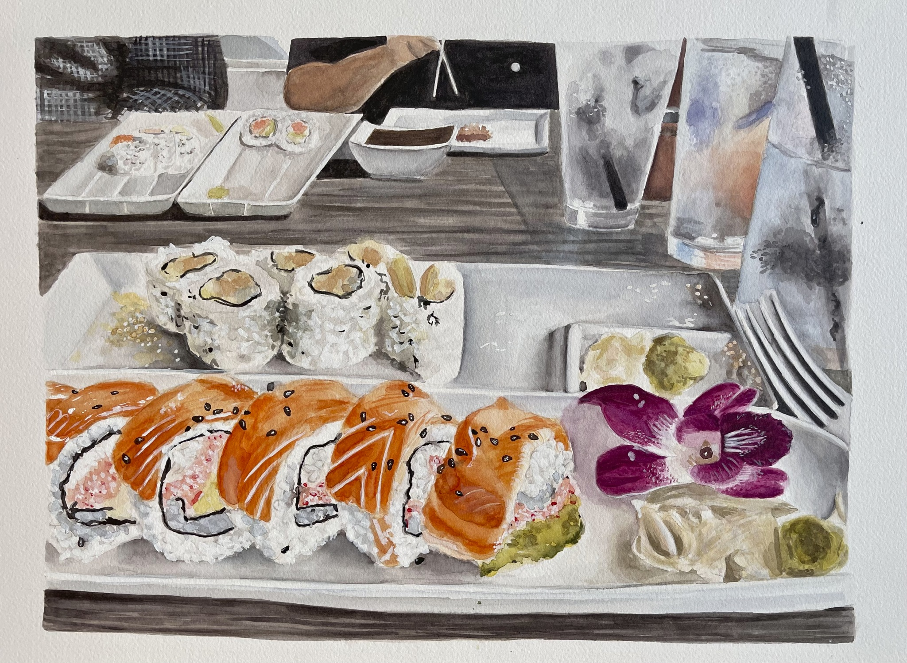
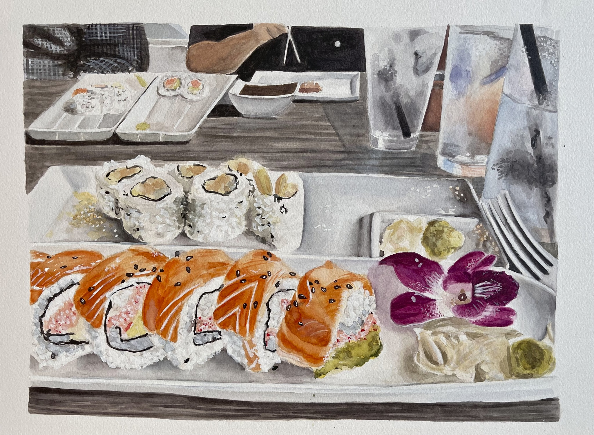
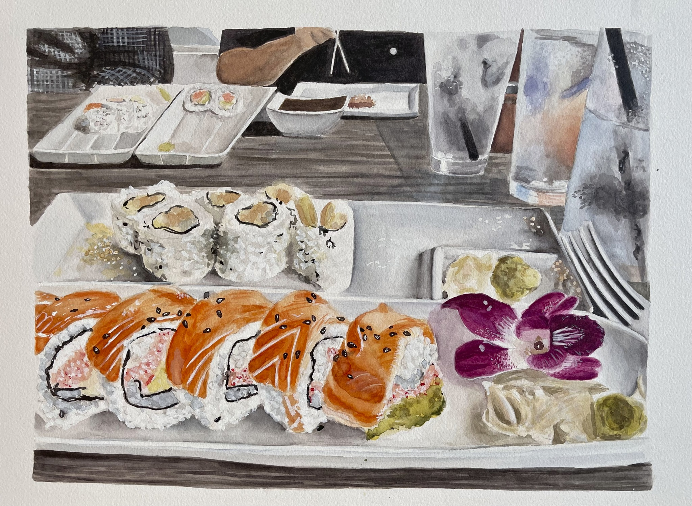

Bootstrap Javascript Tools
Collapse
Modal
Vertical Nav. & Tooltip

Misc. Artworks
Photography, Custom Shoes, Watercolor painting
Learn More!
My favorite artwork out of these three is the watercolor painting on the right! This was my first watercolor still-life that I had ever done

 
